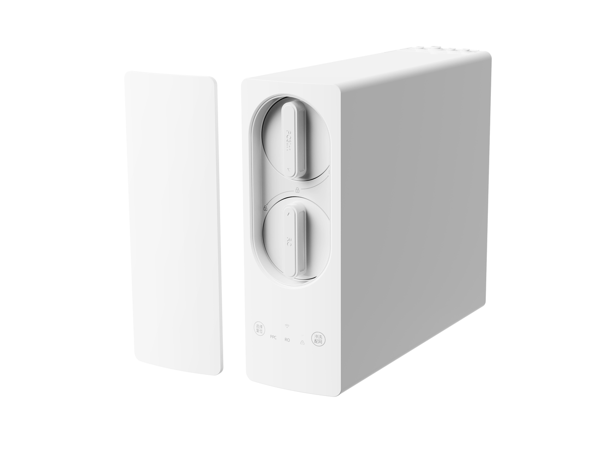

Bawah Wastafel
Bawah WastafelRP-U07
Pemurni RO bawah wastafel 400–600 GPD
SKU: RP-U07
MOQ: Konfirmasikan saat bertanya
Setiap model di bawah ini adalah model katalog terkonfirmasi. Model kandidat tidak tercantum di sini.
46 model
Tidak ada model yang cocok dengan pencarian Anda. Coba SKU lain atau hapus filter.
Panas/Dingin/Es adalah tampilan kurasi dari model yang ada. Fungsi yang tersedia berbeda-beda per model.
Bawah WastafelPemurni RO bawah wastafel 400–600 GPD
SKU: RP-U07
MOQ: Konfirmasikan saat bertanya
 Bawah Wastafel
Bawah WastafelRO bawah wastafel dengan pemanas tangki penyimpanan
SKU: RP-U08
MOQ: Konfirmasikan saat bertanya
 Bawah Wastafel
Bawah WastafelPemurni RO akses depan berkapasitas tinggi
SKU: RP-U09
MOQ: Konfirmasikan saat bertanya
 Bawah Wastafel
Bawah WastafelPemurni RO tiga kartrid
SKU: RP-U11
MOQ: Konfirmasikan saat bertanya
 Bawah Wastafel
Bawah WastafelSistem RO kartrid tarik tanpa alat
SKU: RP-U01
MOQ: Konfirmasikan saat bertanya
 Bawah Wastafel
Bawah WastafelSistem RO penggerak ganda output diperpanjang
SKU: RP-U06
MOQ: Konfirmasikan saat bertanya
 Bawah Wastafel
Bawah WastafelPemurni RO kompak dua kartrid
SKU: RP-U12
MOQ: Konfirmasikan saat bertanya

Bawah WastafelPemurni RO ramping dua outlet
SKU: RP-U14
MOQ: Konfirmasikan saat bertanya
 Bawah Wastafel
Bawah WastafelPemurni RO air hidrogen bawah wastafel
SKU: RP-U04
MOQ: Konfirmasikan saat bertanya
 Bawah Wastafel
Bawah WastafelRO dengan keran air panas instan dan air dingin
SKU: RP-U02
MOQ: Konfirmasikan saat bertanya
 Bawah Wastafel
Bawah WastafelPemurni RO rumah tangga berkapasitas tinggi
SKU: RP-U03
MOQ: Konfirmasikan saat bertanya
 Bawah Wastafel
Bawah WastafelPlatform RO kompak dua kartrid
SKU: RP-U05
MOQ: Konfirmasikan saat bertanya
 Bawah Wastafel
Bawah WastafelPendamping pendingin bawah wastafel
SKU: RP-U15
MOQ: Konfirmasikan saat bertanya
 Bawah Wastafel
Bawah WastafelKeran pemanas instan baja tahan karat
SKU: RP-U16
MOQ: Konfirmasikan saat bertanya
 Bawah Wastafel
Bawah WastafelPra-filter aliran tinggi rumah ganda
SKU: RP-U17
MOQ: Konfirmasikan saat bertanya
 Di Atas Meja
Di Atas MejaPemurni RO dengan teko pemanas
SKU: RP-C07
MOQ: Konfirmasikan saat bertanya
 Di Atas Meja
Di Atas MejaPemurni di atas meja kartrid all-in-one
SKU: RP-C08
MOQ: Konfirmasikan saat bertanya
 Di Atas Meja
Di Atas MejaPemurni RO dengan es, air panas dan dingin
SKU: RP-C09
MOQ: Konfirmasikan saat bertanya
 Di Atas Meja
Di Atas MejaRO di atas meja dengan pendingin kompresor
SKU: RP-C10
MOQ: Konfirmasikan saat bertanya
 Di Atas Meja
Di Atas MejaPemurni RO dengan kopi yang baru digiling
SKU: RP-C11
MOQ: Konfirmasikan saat bertanya
 Di Atas Meja
Di Atas MejaPemurni air di atas meja
SKU: RP-C12
MOQ: Konfirmasikan saat bertanya
 Di Atas Meja
Di Atas MejaDispenser RO pemanas instan
SKU: RP-C13
MOQ: Konfirmasikan saat bertanya
 Di Atas Meja
Di Atas MejaPemurni air panas instan tanpa instalasi
SKU: RP-C03
MOQ: Konfirmasikan saat bertanya
 Di Atas Meja
Di Atas MejaRO pemanas instan dengan teko yang dapat dilepas
SKU: RP-C01
MOQ: Konfirmasikan saat bertanya
 Di Atas Meja
Di Atas MejaDispenser RO air hidrogen di atas meja
SKU: RP-C04
MOQ: Konfirmasikan saat bertanya
 Di Atas Meja
Di Atas MejaSeri air soda — dua varian (RP-C14 / RP-C05)
SKU: RP-C14
MOQ: Konfirmasikan saat bertanya
 Di Atas Meja
Di Atas MejaKeluarga di atas meja air soda & hidrogen (P90 / P90-1)
SKU: RP-C15
MOQ: Konfirmasikan saat bertanya
 Di Atas Meja
Di Atas MejaPemurni health-pot di atas meja
SKU: RP-C17
MOQ: Konfirmasikan saat bertanya
 Di Atas Meja
Di Atas MejaPemurni RO di atas meja ramping dengan teko kaca
SKU: RP-C19
MOQ: Konfirmasikan saat bertanya
 Di Atas Meja
Di Atas MejaRO di atas meja dengan pendingin kompresor dan tangki air panas
SKU: RP-C21
MOQ: Konfirmasikan saat bertanya
 Di Atas Meja
Di Atas MejaDispenser tanam air dingin & panas dengan opsi pembuat es
SKU: RP-C24
MOQ: Konfirmasikan saat bertanya
 Komersial
KomersialDispenser air komersial berdiri bebas (A1) — RO 100G · 50–100 orang · panas / dingin / es
SKU: RP-C23
MOQ: Konfirmasikan saat bertanya
 Pelunakan
PelunakanPelunak air kompak bawah wastafel
SKU: RP-U18
MOQ: Konfirmasikan saat bertanya
 Pelunakan
PelunakanSeri pelunak air tangki terpisah — 32,000 / 48,000 / 64,000 grain
SKU: RP-W01
MOQ: Konfirmasikan saat bertanya
 Pancuran
PancuranFilter pancuran genggam
SKU: RP-S01
MOQ: Konfirmasikan saat bertanya
 Pancuran
PancuranFilter pancuran persegi panjang
SKU: RP-S03
MOQ: Konfirmasikan saat bertanya
 Pancuran
PancuranFilter pancuran multi-mode — empat model
SKU: RP-S07
MOQ: Konfirmasikan saat bertanya
 Pancuran
PancuranFilter pancuran portabel
SKU: RP-S10
MOQ: Konfirmasikan saat bertanya
 Pancuran
PancuranPra-filter pancuran inline
SKU: RP-S11
MOQ: Konfirmasikan saat bertanya
 Pancuran
PancuranFilter pancuran kunci cepat
SKU: RP-S12
MOQ: Konfirmasikan saat bertanya
 Pancuran
PancuranSistem filtrasi pancuran — satu unit atau multi-unit
SKU: RP-S14
MOQ: Konfirmasikan saat bertanya
 Keran
KeranFilter keran klasik
SKU: RP-F01
MOQ: Konfirmasikan saat bertanya
 Keran
KeranFilter keran dapat diputar 360°
SKU: RP-F02
MOQ: Konfirmasikan saat bertanya
 Keran
KeranFilter keran serat karbon
SKU: RP-F06
MOQ: Konfirmasikan saat bertanya
 Keran
KeranFilter keran dengan tampilan masa pakai filter
SKU: RP-F08
MOQ: Konfirmasikan saat bertanya
 Keran
KeranFilter air terpasang di keran — terintegrasi dan terpisah
SKU: RP-F10
MOQ: Konfirmasikan saat bertanya
Mulailah dari tujuan penggunaan, permintaan lokal, kebutuhan instalasi, dan persyaratan model yang terverifikasi. Katalog ini bukan sertifikasi produk portabel atau laporan ukuran pasar. Kesesuaian untuk proyek pasar pemurni air portabel: Dikonfirmasi per pesanan.